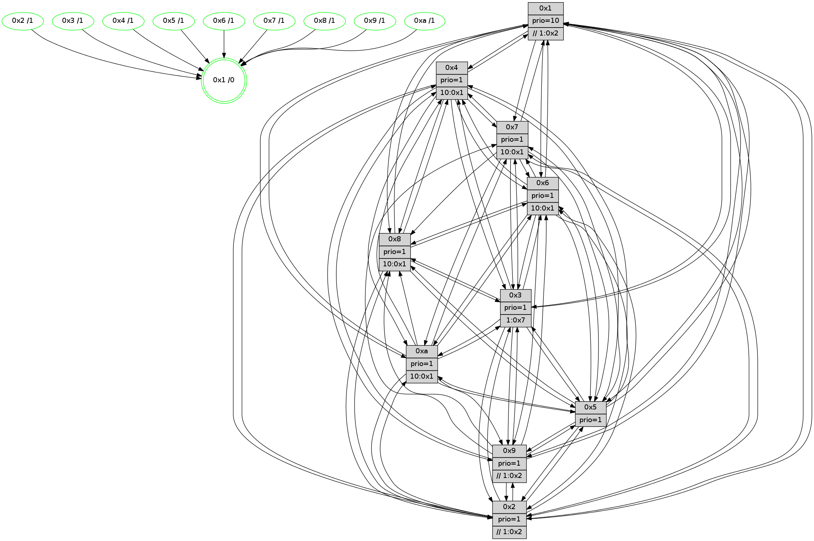

>> << IDX [start] -100 -25 -5 +0 +5 +25 +100 [885.499678135]
 Previous packets
880.002743 beacon03(faad) #0 coord=01,02,03,04,05,06,07,0a,09,08 cycle=688.0ms assoc 64 29 88
880.012743 beacon04(faad) #0 coord=01,02,03,04,05,06,07,0a,09,08 cycle=688.0ms assoc 64 5e 62
880.022746 beacon05(faad) #0 coord=01,02,03,04,05,06,07,0a,09,08 cycle=688.0ms assoc 64 24 2f
880.032744 beacon06(faad) #0 coord=01,02,03,04,05,06,07,0a,09,08 cycle=688.0ms assoc 64 aa f8
880.042743 beacon07(faad) #0 coord=01,02,03,04,05,06,07,0a,09,08 cycle=688.0ms assoc 64 d0 b5
880.052747 beacon0a(faad) #0 coord=01,02,03,04,05,06,07,0a,09,08 cycle=688.0ms assoc 64 a1 be
880.072749 beacon08(faad) #0 coord=01,02,03,04,05,06,07,0a,09,08 cycle=688.0ms assoc 64 55 24
880.084256 [Hello(1): seq=472 sym=4,2,9,5,10,3,8,6,7 sysInfo=coloring-mode-on,ColoringModeRequestCalled stat=4:9,3,8,0/2:0,13,3,10/9:6,12,4,2/5:11,10,12,3/10:6,8,2,1/3:6,14,2,1/8:9,11,2,0/6:2,2,1,9/7:1,3,7,11]
880.087085 [STC(1) #0.108 tree-change,inconsistent-stability,stable,to-color d=0]
880.088582 [Hello(3): seq=563 sym=1,7,6,2,4,8,9,10,5 sysInfo= stat=1:2,12,10,0/7:13,4,2,6/6:10,13,5,1/2:6,6,3,9/4:15,10,10,5/8:8,10,2,0/9:0,7,4,8/10:1,6,1,1/5:15,5,0,9]
880.093478 [Hello(2): seq=559 sym=4,5,7,6,3,9,8,10,1 sysInfo=hasWarning stat=4:3,4,0,4/5:7,13,4,0/7:0,8,10,8/6:12,6,5,7/3:14,14,2,4/9:6,2,3,1/8:9,5,1,7/10:5,11,2,8/1:15,4,1,1]
880.097270 [Color(4) seq=181 @0:0 prio=1 >10.@1,1.@2,1.@3,1.@7]
880.101653 [Hello(6): seq=563 sym=2,3,5,4,7,9,8,10,1 sysInfo= stat=2:5,11,15,7/3:2,15,7,8/5:14,8,8,11/4:11,7,0,0/7:10,10,4,4/9:13,6,6,1/8:9,12,2,0/10:11,10,12,9/1:7,13,1,1]
880.105573 [Hello(5): seq=563 sym=7,6,4,3,1,9,8,10,2 sysInfo=hasWarning stat=7:15,8,10,7/6:14,3,7,9/4:10,7,9,5/3:14,7,0,8/1:2,7,4,1/9:5,4,6,1/8:9,2,3,7/10:8,8,15,3/2:3,4,0,0]
880.108696 [Color(5) seq=216 @0:0 prio=1]
880.112683 [Color(2) seq=208 @0:0 prio=1 >>1.@2,1.@3,1.@4]
----------------------------------------------------------------------
880.770891 beacon01(faad) #0 coord=01,02,03,04,05,06,07,0a,09,08 cycle=688.0ms assoc
-- color-indic=1 64 7c f1
880.780872 beacon02(faad) #0 coord=01,02,03,04,05,06,07,0a,09,08 cycle=688.0ms assoc 64 ef c0
880.790874 beacon03(faad) #0 coord=01,02,03,04,05,06,07,0a,09,08 cycle=688.0ms assoc 64 95 8d
880.800872 beacon04(faad) #0 coord=01,02,03,04,05,06,07,0a,09,08 cycle=688.0ms assoc 64 e2 67
880.810873 beacon05(faad) #0 coord=01,02,03,04,05,06,07,0a,09,08 cycle=688.0ms assoc 64 98 2a
880.820876 beacon06(faad) #0 coord=01,02,03,04,05,06,07,0a,09,08 cycle=688.0ms assoc 64 16 fd
880.830874 beacon07(faad) #0 coord=01,02,03,04,05,06,07,0a,09,08 cycle=688.0ms assoc 64 6c b0
880.840878 beacon0a(faad) #0 coord=01,02,03,04,05,06,07,0a,09,08 cycle=688.0ms assoc 64 1d bb
880.860878 beacon08(faad) #0 coord=01,02,03,04,05,06,07,0a,09,08 cycle=688.0ms assoc 64 e9 21
880.872668 [Hello(4): seq=563 sym=5,7,6,2,3,9,8,10,1 sysInfo= stat=5:5,14,5,9/7:9,13,8,5/6:14,8,5,9/2:5,12,0,8/3:7,0,2,6/9:3,14,9,4/8:2,9,8,10/10:9,6,11,8/1:8,9,6,1]
880.875402 [Color(3) seq=204 @0:0 prio=1 >1.@7]
880.877599 [Hello(10): seq=496 sym=6,2,3,8,9,5,7,4,1 sysInfo=hasWarning stat=6:10,3,6,3/2:3,15,2,3/3:10,6,1,7/8:9,11,3,0/9:3,14,6,1/5:2,2,8,11/7:8,14,6,5/4:12,2,13,6/1:12,7,8,1]
880.881194 [STC(4)->1 #0.108 tree-change,inconsistent-stability,stable,to-color d=1]
880.883325 [STC(2)->1 #0.108 tree-change,inconsistent-stability,stable,to-color d=1]
880.885024 [STC(5)->1 #0.108 tree-change,inconsistent-stability,stable,to-color d=1]
880.886530 [Color(1) seq=244 @0:0 prio=10 >>1.@2,1.@3,1.@4]
880.888046 [Hello(8): seq=507 sym=5,2,3,4,7,6,10,1 sysInfo=hasWarning stat=5:0,5,10,10/2:14,14,4,3/3:15,0,6,10/4:4,15,4,6/7:7,6,8,10/6:1,1,3,9/10:13,4,8,1/1:1,8,3,0]
880.890376 [Hello(7): seq=563 sym=2,3,5,6,4,8,10,1 sysInfo=hasWarning stat=2:8,14,0,11/3:6,13,9,10/5:14,0,12,14/6:5,8,10,5/4:1,3,7,0/8:5,8,2,0/10:2,3,0,1/1:9,11,5,0]
880.895646 [Color(6) seq=206 @0:0 prio=1 >10.@1,1.@2,1.@3,1.@5]
880.898913 [Color(8) seq=219 @0:0 prio=1 >10.@1,1.@2,1.@3,1.@5]
880.901079 [STC(9)->1 #0.108 tree-change,inconsistent-stability,stable,to-color d=1]
880.902972 [TreeStatus(5)-.->1 #0.108 tree-change,inconsistent-stability,stable child=1]
880.905575 [STC(10)->1 #0.108 tree-change,inconsistent-stability,stable,to-color d=1]
880.907978 [TreeStatus(9)-.->1 #0.108 tree-change,inconsistent-stability,stable child=1]
880.909902 [Color(10) seq=184 @0:0 prio=1 >10.@1,1.@2,1.@3,1.@5]
880.912808 [STC(7)->1 #0.108 tree-change,inconsistent-stability,stable,to-color d=1]
880.915401 [Color(7) seq=169 @0:0 prio=1 >10.@1,1.@2,1.@3,1.@4]
880.920307 [Color(9) seq=212 @0:0 prio=1 >>1.@2,1.@3,1.@4]
----------------------------------------------------------------------
881.559021 beacon01(faad) #0 coord=01,02,03,04,05,06,07,0a,09,08 cycle=688.0ms assoc
-- color-indic=1 64 68 9f
881.569003 beacon02(faad) #0 coord=01,02,03,04,05,06,07,0a,09,08 cycle=688.0ms assoc 64 fb ae
881.579005 beacon03(faad) #0 coord=01,02,03,04,05,06,07,0a,09,08 cycle=688.0ms assoc 64 81 e3
881.589006 beacon04(faad) #0 coord=01,02,03,04,05,06,07,0a,09,08 cycle=688.0ms assoc 64 f6 09
881.599004 beacon05(faad) #0 coord=01,02,03,04,05,06,07,0a,09,08 cycle=688.0ms assoc 64 8c 44
881.609003 beacon06(faad) #0 coord=01,02,03,04,05,06,07,0a,09,08 cycle=688.0ms assoc 64 02 93
881.619005 beacon07(faad) #0 coord=01,02,03,04,05,06,07,0a,09,08 cycle=688.0ms assoc 64 78 de
881.629009 beacon0a(faad) #0 coord=01,02,03,04,05,06,07,0a,09,08 cycle=688.0ms assoc 64 09 d5
881.649009 beacon08(faad) #0 coord=01,02,03,04,05,06,07,0a,09,08 cycle=688.0ms assoc 64 fd 4f
881.659956 [Hello(1): seq=473 sym=4,2,9,5,10,3,8,6,7 sysInfo=coloring-mode-on,ColoringModeRequestCalled stat=4:10,4,8,0/2:1,14,3,10/9:6,13,5,3/5:12,11,12,4/10:6,9,3,1/3:7,14,2,1/8:10,12,3,0/6:3,3,1,9/7:2,4,8,11]
881.662604 [Hello(3): seq=564 sym=1,7,6,2,4,8,9,10,5 sysInfo= stat=1:2,13,10,0/7:14,5,3,6/6:11,14,5,1/2:7,7,4,9/4:0,11,11,5/8:9,11,3,0/9:0,8,5,9/10:2,7,2,1/5:0,6,1,10]
881.665639 [Hello(2): seq=560 sym=4,5,7,6,3,9,8,10,1 sysInfo=hasWarning stat=4:3,4,0,4/5:7,13,5,1/7:1,9,11,8/6:12,7,5,7/3:14,14,2,4/9:7,3,4,2/8:10,6,1,7/10:5,12,3,8/1:0,5,2,1]
881.668800 [Color(2) seq=209 @0:0 prio=1 >>1.@2,1.@3,1.@4]
881.671898 [Color(4) seq=182 @0:0 prio=1 >10.@1,1.@2,1.@3,1.@7]
881.674577 [Hello(6): seq=564 sym=2,3,5,4,7,9,8,10,1 sysInfo= stat=2:5,12,15,7/3:2,15,7,8/5:15,9,8,12/4:12,7,0,0/7:10,11,5,4/9:13,7,7,2/8:9,13,2,0/10:11,11,13,9/1:7,13,1,1]
881.677765 [Hello(5): seq=564 sym=7,6,4,3,1,9,8,10,2 sysInfo=hasWarning stat=7:15,9,11,7/6:14,3,7,9/4:10,7,9,5/3:14,7,0,8/1:3,7,5,1/9:5,5,6,2/8:9,2,3,7/10:8,9,0,3/2:3,5,0,0]
881.682521 [Color(5) seq=217 @0:0 prio=1]
----------------------------------------------------------------------
882.347152 beacon01(faad) #0 coord=01,02,03,04,05,06,07,0a,09,08 cycle=688.0ms assoc
-- color-indic=1 64 d4 9a
882.357135 beacon02(faad) #0 coord=01,02,03,04,05,06,07,0a,09,08 cycle=688.0ms assoc 64 47 ab
882.367135 beacon03(faad) #0 coord=01,02,03,04,05,06,07,0a,09,08 cycle=688.0ms assoc 64 3d e6
882.377135 beacon04(faad) #0 coord=01,02,03,04,05,06,07,0a,09,08 cycle=688.0ms assoc 64 4a 0c
882.387135 beacon05(faad) #0 coord=01,02,03,04,05,06,07,0a,09,08 cycle=688.0ms assoc 64 30 41
882.397136 beacon06(faad) #0 coord=01,02,03,04,05,06,07,0a,09,08 cycle=688.0ms assoc 64 be 96
882.407136 beacon07(faad) #0 coord=01,02,03,04,05,06,07,0a,09,08 cycle=688.0ms assoc 64 c4 db
882.417142 beacon0a(faad) #0 coord=01,02,03,04,05,06,07,0a,09,08 cycle=688.0ms assoc 64 b5 d0
882.437140 beacon08(faad) #0 coord=01,02,03,04,05,06,07,0a,09,08 cycle=688.0ms assoc 64 41 4a
882.449650 [Hello(4): seq=564 sym=5,7,6,2,3,9,8,10,1 sysInfo= stat=5:6,15,6,10/7:10,14,9,5/6:15,9,5,9/2:5,12,1,8/3:8,0,2,6/9:4,15,10,5/8:3,10,8,10/10:9,7,12,8/1:9,10,6,1]
882.452373 [Hello(8): seq=508 sym=5,2,3,4,6,1 sysInfo=hasWarning stat=5:1,6,10,11/2:15,15,4,3/3:0,1,6,10/4:5,0,4,6/6:2,1,3,9/1:2,8,3,0]
882.454602 [Color(3) seq=205 @0:0 prio=1 >1.@7]
882.456016 [Hello(10): seq=497 sym=6,2,3,8,9,5,7,4,1 sym= sysInfo=hasWarning stat=]
882.458903 [Hello(9): seq=508 sym=2,5,3,4,7,6,8,1 sysInfo=hasWarning stat=2:15,8,5,1/5:15,6,2,2/3:12,13,2,10/4:5,4,2,6/7:6,15,10,8/6:13,15,9,7/8:6,0,11,1/1:8,2,6,1]
882.461869 [Color(6) seq=207 @0:0 prio=1 >10.@1,1.@2,1.@3,1.@5]
882.463799 [Color(9) seq=213 @0:0 prio=1 >>1.@2,1.@3,1.@4]
882.466673 [Hello(7): seq=564 sym=2,3,5,6,4,8,10,1 sysInfo=hasWarning stat=2:9,15,0,11/3:7,13,9,10/5:15,1,12,14/6:6,8,10,5/4:2,4,7,0/8:5,8,2,0/10:2,3,0,1/1:10,11,5,0]
882.470342 [Color(7) seq=170 @0:0 prio=1 >10.@1,1.@2,1.@3,1.@4]
882.472056 [Color(10) seq=185 @0:0 prio=1 >10.@1,1.@2,1.@3,1.@5]
882.473962 [Color(8) seq=220 @0:0 prio=1 >10.@1,1.@2,1.@3,1.@5]
----------------------------------------------------------------------
883.135284 beacon01(faad) #0 coord=01,02,03,04,05,06,07,0a,09,08 cycle=688.0ms assoc
-- color-indic=1 64 10 94
883.145266 beacon02(faad) #0 coord=01,02,03,04,05,06,07,0a,09,08 cycle=688.0ms assoc 64 83 a5
883.155267 beacon03(faad) #0 coord=01,02,03,04,05,06,07,0a,09,08 cycle=688.0ms assoc 64 f9 e8
883.165266 beacon04(faad) #0 coord=01,02,03,04,05,06,07,0a,09,08 cycle=688.0ms assoc 64 8e 02
883.175268 beacon05(faad) #0 coord=01,02,03,04,05,06,07,0a,09,08 cycle=688.0ms assoc 64 f4 4f
883.185266 beacon06(faad) #0 coord=01,02,03,04,05,06,07,0a,09,08 cycle=688.0ms assoc 64 7a 98
883.195267 beacon07(faad) #0 coord=01,02,03,04,05,06,07,0a,09,08 cycle=688.0ms assoc 64 00 d5
883.205273 beacon0a(faad) #0 coord=01,02,03,04,05,06,07,0a,09,08 cycle=688.0ms assoc 64 71 de
883.225275 beacon08(faad) #0 coord=01,02,03,04,05,06,07,0a,09,08 cycle=688.0ms assoc 64 85 44
883.237132 [Hello(3): seq=565 sym=1,7,6,2,4,8,9,10,5 sysInfo= stat=1:2,13,10,0/7:15,6,3,6/6:12,15,5,1/2:8,8,4,9/4:1,12,11,5/8:9,12,3,0/9:1,9,5,9/10:2,8,2,1/5:1,7,1,10]
883.241003 [Color(4) seq=183 @0:0 prio=1 >10.@1,1.@2,1.@3,1.@7]
883.242688 [Hello(2): seq=561 sym=4,5,7,6,3,9,8,10,1 sysInfo=hasWarning stat=4:4,5,0,4/5:8,14,5,1/7:2,10,11,8/6:13,8,5,7/3:15,15,2,4/9:8,4,4,2/8:11,7,1,7/10:6,13,3,8/1:1,5,2,1]
883.245561 [Hello(5): seq=565 sym=7,6,4,3,1,9,8,10,2 sysInfo=hasWarning stat=7:0,10,11,7/6:14,4,7,9/4:11,7,9,5/3:15,8,0,8/1:4,7,5,1/9:6,6,6,2/8:10,3,3,7/10:9,10,0,3/2:3,5,0,0]
883.248854 [Hello(6): seq=565 sym=2,3,5,4,7,9,8,10,1 sysInfo= stat=2:5,12,15,7/3:2,15,7,8/5:0,10,8,12/4:13,7,0,0/7:11,12,5,4/9:13,8,7,2/8:9,14,2,0/10:11,12,13,9/1:7,13,1,1]
883.251471 [Hello(1): seq=474 sym=4,2,9,5,10,3,8,6,7 sysInfo=coloring-mode-on,ColoringModeRequestCalled stat=4:11,5,8,0/2:2,15,3,10/9:7,14,5,3/5:13,12,12,4/10:6,10,3,1/3:8,14,2,1/8:10,13,3,0/6:4,4,1,9/7:3,5,8,11]
883.256007 [Color(5) seq=218 @0:0 prio=1]
883.260132 [Color(2) seq=210 @0:0 prio=1 >>1.@2,1.@3,1.@4]
----------------------------------------------------------------------
883.923417 beacon01(faad) #0 coord=01,02,03,04,05,06,07,0a,09,08 cycle=688.0ms assoc
-- color-indic=1 64 ac 91
883.933400 beacon02(faad) #0 coord=01,02,03,04,05,06,07,0a,09,08 cycle=688.0ms assoc 64 3f a0
883.943398 beacon03(faad) #0 coord=01,02,03,04,05,06,07,0a,09,08 cycle=688.0ms assoc 64 45 ed
883.953402 beacon04(faad) #0 coord=01,02,03,04,05,06,07,0a,09,08 cycle=688.0ms assoc 64 32 07
883.963400 beacon05(faad) #0 coord=01,02,03,04,05,06,07,0a,09,08 cycle=688.0ms assoc 64 48 4a
883.973400 beacon06(faad) #0 coord=01,02,03,04,05,06,07,0a,09,08 cycle=688.0ms assoc 64 c6 9d
883.983399 beacon07(faad) #0 coord=01,02,03,04,05,06,07,0a,09,08 cycle=688.0ms assoc 64 bc d0
883.993404 beacon0a(faad) #0 coord=01,02,03,04,05,06,07,0a,09,08 cycle=688.0ms assoc 64 cd db
884.013405 beacon08(faad) #0 coord=01,02,03,04,05,06,07,0a,09,08 cycle=688.0ms assoc 64 39 41
884.025587 [Hello(4): seq=565 sym=5,7,6,2,3,9,8,10,1 sysInfo= stat=5:7,0,6,10/7:11,15,9,5/6:0,10,5,9/2:6,13,1,8/3:9,1,2,6/9:5,0,10,5/8:4,11,8,10/10:10,8,12,8/1:10,10,6,1]
884.028312 [STC(1) #0.109 tree-change,inconsistent-stability,stable,to-color d=0]
884.032927 [Hello(10): seq=498 sym=6,2,3,8,9,5,7,4,1 sysInfo=hasWarning stat=6:12,3,6,3/2:5,1,2,3/3:12,7,1,7/8:9,12,3,0/9:3,15,6,1/5:4,4,8,11/7:8,15,7,5/4:14,4,13,6/1:14,7,8,1]
884.037661 [Color(10) seq=186 @0:0 prio=1 >10.@1,1.@2,1.@3,1.@5]
884.039917 [Hello(7): seq=565 sym=2,3,5,6,4,8,10,1 sysInfo=hasWarning stat=2:10,0,0,11/3:8,13,9,10/5:0,2,12,14/6:7,8,10,5/4:3,5,7,0/8:5,9,2,0/10:2,4,0,1/1:11,11,5,0]
884.042844 [Color(8) seq=221 @0:0 prio=1 >10.@1,1.@2,1.@3,1.@5]
884.045610 [Color(7) seq=171 @0:0 prio=1 >10.@1,1.@2,1.@3,1.@4]
884.047643 [Color(3) seq=206 @0:0 prio=1 >1.@7]
884.054305 [Hello(9): seq=509 sym=2,5,3,4,7,6,8,1 sysInfo=hasWarning stat=2:0,9,5,1/5:0,7,2,2/3:13,13,2,10/4:6,5,2,6/7:7,0,10,8/6:14,15,9,7/8:6,1,11,1/1:9,2,6,1]
884.059225 [Color(9) seq=214 @0:0 prio=1 >>1.@2,1.@3,1.@4]
----------------------------------------------------------------------
884.711547 beacon01(faad) #0 coord=01,02,03,04,05,06,07,0a,09,08 cycle=688.0ms assoc
-- color-indic=1 64 98 89
884.721530 beacon02(faad) #0 coord=01,02,03,04,05,06,07,0a,09,08 cycle=688.0ms assoc 64 0b b8
884.731530 beacon03(faad) #0 coord=01,02,03,04,05,06,07,0a,09,08 cycle=688.0ms assoc 64 71 f5
884.741531 beacon04(faad) #0 coord=01,02,03,04,05,06,07,0a,09,08 cycle=688.0ms assoc 64 06 1f
884.751530 beacon05(faad) #0 coord=01,02,03,04,05,06,07,0a,09,08 cycle=688.0ms assoc 64 7c 52
884.761530 beacon06(faad) #0 coord=01,02,03,04,05,06,07,0a,09,08 cycle=688.0ms assoc 64 f2 85
884.771531 beacon07(faad) #0 coord=01,02,03,04,05,06,07,0a,09,08 cycle=688.0ms assoc 64 88 c8
884.781536 beacon0a(faad) #0 coord=01,02,03,04,05,06,07,0a,09,08 cycle=688.0ms assoc 64 f9 c3
884.801536 beacon08(faad) #0 coord=01,02,03,04,05,06,07,0a,09,08 cycle=688.0ms assoc 64 0d 59
884.812797 [Hello(1): seq=475 sym=4,2,9,5,10,3,8,6,7 sysInfo=coloring-mode-on,ColoringModeRequestCalled stat=4:12,5,8,0/2:2,0,3,10/9:8,15,5,3/5:13,13,12,4/10:6,11,3,1/3:8,15,2,1/8:10,14,3,0/6:4,4,1,9/7:4,6,8,11]
884.815459 [Hello(6): seq=566 sym=2,3,5,4,7,9,8,10,1 sysInfo= stat=2:5,13,15,7/3:2,0,7,8/5:0,11,8,12/4:14,7,0,0/7:12,13,5,4/9:14,9,7,2/8:9,15,2,0/10:12,13,13,9/1:8,13,1,1]
884.818180 [Hello(5): seq=566 sym=7,6,4,3,1,9,8,10,2 sysInfo=hasWarning stat=7:1,11,11,7/6:14,4,7,9/4:12,7,9,5/3:0,9,0,8/1:4,7,6,1/9:7,7,6,2/8:11,4,3,7/10:10,11,0,3/2:3,6,0,0]
884.820867 [STC(4)->1 #0.109 tree-change,inconsistent-stability,stable,to-color d=1]
884.822262 [STC(5)->1 #0.109 tree-change,inconsistent-stability,stable,to-color d=1]
884.824407 [Color(4) seq=184 @0:0 prio=1 >10.@1,1.@2,1.@3,1.@7]
884.826478 [Hello(2): seq=562 sym=4,5,7,6,3,9,8,10,1 sysInfo=hasWarning stat=4:5,5,0,4/5:8,14,5,1/7:3,11,11,8/6:13,9,5,7/3:0,0,2,4/9:9,5,4,2/8:11,8,1,7/10:7,14,3,8/1:1,5,3,1]
884.829140 [STC(9)->1 #0.109 tree-change,inconsistent-stability,stable,to-color d=1]
884.831074 [Hello(3): seq=566 sym=1,7,6,2,4,8,9,10,5 sysInfo= stat=1:3,13,10,0/7:15,6,3,6/6:13,15,5,1/2:9,9,4,9/4:2,13,11,5/8:9,12,3,0/9:2,10,5,9/10:2,8,2,1/5:2,8,1,10]
884.835987 [Color(5) seq=219 @0:0 prio=1]
884.841033 [STC(2)->1 #0.109 tree-change,inconsistent-stability,stable,to-color d=1]
884.842681 [Color(2) seq=211 @0:0 prio=1 >>1.@2,1.@3,1.@4]